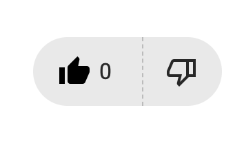

Overview
For my term project in IDM-241, I chose to study and analyze the Google email navigation bar, focusing on its main five controls. I redesigned the side panel, incorporating three primary buttons: Chat, Email, and Meetings. Additionally, I included two supplementary navigation features: the Active Status button and the Help/Support button.
Here’s a breakdown of each button’s functionality:
Email Button: Provides users with a view of their email inbox and messages.
Chat Button: Allows users to access and review previous chat messages.
Meetings Button: Serves as a hub for online meetings, enabling users to join or schedule meetings.
Active Status Button:
Lets users toggle their online status, choosing from modes like Active, Do Not Disturb, and others.Support/Help Button:Offers users assistance by addressing questions or concerns about their email experience.
I committed to this idea around week three, during the beta phase of the project. Initially, during the alpha phase, I explored a different interaction: the YouTube "like" button. However, I pivoted to this project after realizing that the YouTube video section lacked engaging components to build upon.
Challenges
While building the components for my project, I encountered several challenges, primarily due to my limited experience with CSS. Developing even basic components often required extensive research as I navigated the complexities of web development. One of the most significant hurdles was working with animations. Despite including subtle animations in my project—such as the dropdown effect triggered by the Active Status button—I found the process of implementing them in CSS to be particularly challenging and unintuitive. Another issue I faced involved icons. During the development phase, Google revamped their Google Fonts platform, making significant changes to how icons are integrated. For example:
Previously, the syntax was:
< span > class="material-symbols-outlined">videocam < /span >It was changed to:
< span > class="material-icons">video< /span >
This rebranding resulted in the removal of all documentation related to the material-symbols-outlined class. Although remnants of the old documentation can still be found online, it became increasingly difficult to locate comprehensive explanations or guidelines. As a result, I had to adjust my approach, switch to the new icon integration system, and rethink my styling and animations to accommodate the updated framework.
These challenges, while frustrating, pushed me to expand my knowledge and problem-solving skills, especially in the areas of CSS animations and icon management.
Solution
Due to my lack of CSS experience, I initially relied heavily on YouTube tutorials, which were incredibly helpful in building a foundation for my learning. However, they were sometimes confusing or overly generalized, which led me to pivot towards online documentation and hands-on examples to refine my understanding and better address the specific challenges in my project.
For example, while building out the side panel, I discovered an excellent YouTube tutorial that introduced the idea of using radio elements instead of traditional buttons. This approach resolved the issue of having multiple buttons active simultaneously, ensuring that only one button could be active at a time. This solution was particularly useful when I was working on the YouTube-like button component, allowing me to maintain proper functionality and design consistency.
Additionally, as I progressed, I realized the importance of understanding CSS specificity and how to manage styling conflicts effectively. One memorable instance was when I tried to implement a hover effect for the buttons, only to find that existing styles were overriding my new rules. Digging into online forums and CSS documentation helped me learn about specificity and the cascading nature of CSS, which allowed me to resolve the issue.
These moments of learning not only helped me complete my project but also significantly improved my problem-solving skills and my ability to adapt to new concepts in web development.
Results
As a result of this 10-week class, I gained a deeper understanding of the importance of micro-interactions and how to effectively implement them. I learned just how much time and effort is required to develop these seemingly simple components, and I now have a greater appreciation for the detailed thought that goes into creating smooth and intuitive user experiences.
I also learned about the structured approach to component development, which includes identifying key elements such as triggers, feedback, rules, loops, and modes. Breaking down a component into these steps helped me to plan and execute my designs more effectively, ensuring each element served its purpose and contributed to a cohesive user experience.
In addition to conceptual knowledge, I was able to significantly improve my CSS skills. Through trial, error, and consistent research, I became more familiar with essential concepts such as CSS animations, transitions, specificity, and responsive design. These skills not only helped me complete this project but also equipped me with practical tools for tackling future web development challenges.